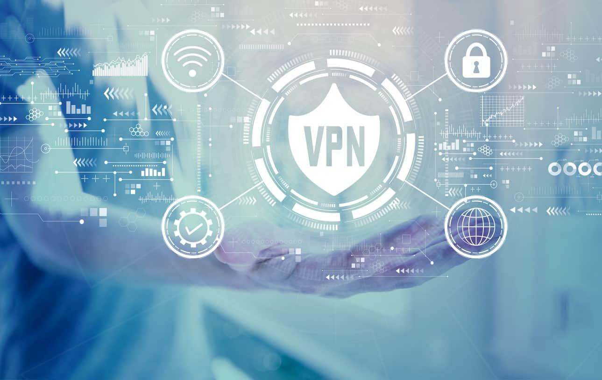

La tunelización es una técnica utilizada en redes para transportar datos a través de una infraestructura que no es directamente compatible con el protocolo de dichos datos. Esto se logra mediante el encapsulado de paquetes, que consiste en envolver un paquete de datos dentro de otro, esto para permitir que los datos viajen por redes que de otra manera no podrían soportarlos. La tunelización una herramienta clave en redes privadas virtuales (VPN), donde se asegura la transmisión de datos entre dispositivos y redes de manera segura y eficiente.
El encapsulado implica dividir los datos en paquetes, cada paquete con un encabezado y una carga útil. El encabezado contiene información esencial como el destino del paquete y el protocolo utilizado, mientras que la carga útil es el contenido del paquete. Durante la tunelización, un paquete completo, incluido su encabezado y carga útil, se encapsula dentro de la carga útil de otro paquete, formando un paquete dentro de otro paquete. Esto permite que el paquete encapsulado utilice un protocolo diferente mientras viaja por la red.
Además de su uso en VPN, la tunelización ofrece otras ventajas como la conexión segura entre redes, el transporte de protocolos incompatibles y, en algunos casos, la capacidad de sortear firewalls. Estas características hacen que la tunelización sea una solución versátil cuando se quiere superar restricciones de red, mejorar la seguridad y/o garantizar la compatibilidad en entornos de comunicación complejos.
Una VPN es una conexión segura y encriptada en una red pública compartida. La tunelización es el proceso que permite que los paquetes de la VPN lleguen a su destino. Las VPN pueden utilizar una variedad de protocolos:
Una VPN es una conexión segura y encriptada en una red pública compartida. La tunelización es el proceso que permite que los paquetes de la VPN lleguen a su destino. Las VPN pueden utilizar una variedad de protocolos:
Proporciona seguridad adicional para tus datos mientras viajan a través de redes, cifrándolos y asegurando que solo sean accesibles por usuarios autorizados. También ayuda a prevenir el acceso no autorizado a la red y mantiene alejados a agentes maliciosos.
Puede usarse para crear una VPN, permitiendo que múltiples usuarios remotos se conecten de forma segura a través de una red pública o privada compartida. Esto facilita el trabajo remoto y la colaboración entre equipos de manera más segura
Algunos protocolos como GRE e IPsec pueden reducir la latencia y mejorar la velocidad al disminuir la cantidad de datos que necesitan ser enviados, aumentando la eficiencia de la red.
Facilita escalar las redes hacia arriba o hacia abajo según las necesidades actuales, ya que los túneles pueden agregarse o eliminarse fácilmente sin interrumpir las conexiones o servicios existentes.
En redes más grandes que necesitan permanecer organizadas, permite a los administradores gestionar fácilmente diferentes segmentos de la red por separado sin afectar el rendimiento o las medidas de seguridad de las demás partes.
Brinda más flexibilidad a las organizaciones para configurar sus redes. Pueden usar diferentes protocolos y aplicaciones en distintas partes de la infraestructura, manteniéndolas conectadas de manera segura a través de túneles.
Como los túneles permiten el paso de diferentes tipos de tráfico, ofrecen soporte para protocolos que podrían no ser compatibles con algunos dispositivos de hardware, resolviendo problemas de compatibilidad que podrían impedir que ciertas aplicaciones funcionen correctamente.
Puede usarse para evitar las restricciones impuestas por reglas locales de firewalls o limitaciones de ISP. Esto es útil para acceder a servicios bloqueados en ciertas regiones o países debido a leyes de censura u otros problemas regulatorios. Las aplicaciones VPN suelen utilizarse para sortear estas restricciones y permitir a los usuarios acceder a contenido restringido.
La principal desventaja de usar túneles de red es que pueden generar riesgos de seguridad si los datos no se cifran adecuadamente. Si el túnel está configurado incorrectamente, podría ser posible que agentes maliciosos intercepten y modifiquen los datos enviados a través de él.
Para usar túneles de red, se necesita hardware o software especial que los soporte. Esto puede ser costoso de implementar, especialmente si se están configurando múltiples túneles en redes diferentes.
Al igual que con cualquier tecnología, pueden surgir problemas de compatibilidad al usar diferentes protocolos o aplicaciones en redes que no los soportan. Por lo que es importante investigar los diferentes protocolos de túnel y verificar la compatibilidad antes de implementarlos.
Mientras que algunos protocolos pueden reducir la latencia, otros pueden aumentarla. Es necesario investigar los diferentes protocolos de túnel y determinar cuál funciona mejor antes de implementarlos.